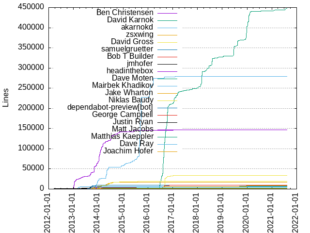
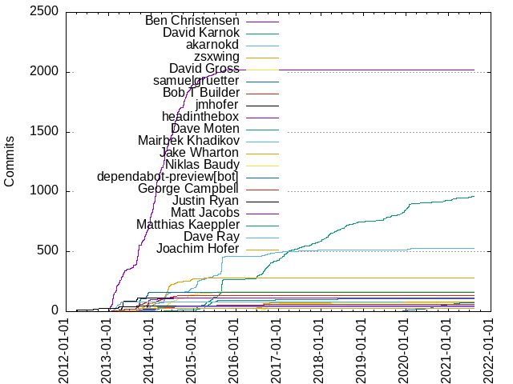

Authors
| Author | Commits (%) | + lines | - lines | First commit | Last commit | Age | Active days | # by commits |
|---|
| Ben Christensen | 2019 (34.11%) | 147139 | 248310 | 2013-01-08 | 2017-01-10 | 1462 days, 3:09:49 | 372 | 1 |
| David Karnok | 963 (16.27%) | 447326 | 151980 | 2015-01-19 | 2021-08-09 | 2394 days, 2:17:13 | 529 | 2 |
| akarnokd | 531 (8.97%) | 279543 | 71272 | 2013-11-19 | 2021-05-03 | 2722 days, 4:34:34 | 216 | 3 |
| zsxwing | 281 (4.75%) | 17201 | 6528 | 2013-09-16 | 2015-06-02 | 624 days, 2:20:52 | 136 | 4 |
| David Gross | 168 (2.84%) | 18785 | 15756 | 2013-11-16 | 2016-10-22 | 1070 days, 4:00:01 | 101 | 5 |
| samuelgruetter | 158 (2.67%) | 9717 | 4639 | 2013-09-06 | 2013-12-08 | 93 days, 3:30:34 | 29 | 6 |
| Bob T Builder | 136 (2.30%) | 136 | 136 | 2013-04-03 | 2014-08-19 | 502 days, 7:12:45 | 63 | 7 |
| jmhofer | 116 (1.96%) | 5345 | 2005 | 2013-04-06 | 2013-09-08 | 155 days, 1:53:29 | 23 | 8 |
| headinthebox | 111 (1.88%) | 6488 | 5577 | 2013-11-20 | 2014-07-11 | 233 days, 16:35:49 | 22 | 9 |
| Dave Moten | 107 (1.81%) | 6699 | 2166 | 2014-02-14 | 2019-09-13 | 2037 days, 1:19:56 | 74 | 10 |
| Mairbek Khadikov | 77 (1.30%) | 5528 | 1393 | 2013-02-07 | 2013-04-23 | 75 days, 12:19:15 | 25 | 11 |
| Jake Wharton | 77 (1.30%) | 9021 | 9805 | 2015-10-16 | 2019-12-19 | 1525 days, 16:37:07 | 23 | 12 |
| Niklas Baudy | 74 (1.25%) | 34190 | 26006 | 2016-06-24 | 2019-08-28 | 1160 days, 17:13:29 | 44 | 13 |
| dependabot-preview[bot] | 71 (1.20%) | 71 | 71 | 2019-12-02 | 2021-04-08 | 492 days, 21:15:37 | 63 | 14 |
| George Campbell | 58 (0.98%) | 9570 | 4030 | 2013-01-23 | 2016-11-10 | 1387 days, 8:03:51 | 45 | 15 |
| Justin Ryan | 49 (0.83%) | 1792 | 728 | 2012-03-18 | 2014-12-13 | 1000 days, 0:42:48 | 33 | 16 |
| Matt Jacobs | 47 (0.79%) | 1439 | 3361 | 2013-04-03 | 2014-10-02 | 546 days, 9:23:31 | 24 | 17 |
| Matthias Kaeppler | 41 (0.69%) | 2374 | 514 | 2013-08-14 | 2014-07-27 | 347 days, 10:41:49 | 17 | 18 |
| Dave Ray | 40 (0.68%) | 5314 | 1884 | 2013-02-06 | 2014-08-12 | 552 days, 2:22:53 | 13 | 19 |
| Joachim Hofer | 30 (0.51%) | 1342 | 320 | 2013-03-25 | 2013-09-13 | 171 days, 18:42:48 | 8 | 20 |
These didn't make it to the top: Dávid Karnok, Michael de Jong, dependabot[bot], benjamintboyle, Joakim Bodin, MarioAriasC, pron, John Myers, John Marks, David M. Gross, Shixiong Zhu, Jason Neufeld, Aleksandar Simic, Gábor Lipták, Adam Bliss, Billy Yuen, Zac Sweers, Samuel Gruetter, Roman Wuattier, Jerome, Artem Zinnatullin :slowpoke, prabirshrestha, lorenzpahl, Mike Ragalie, Artem Zinnatullin, jcacciatore, Landon Fuller, Jihong Park, Alex Wenckus, Aaron Tull, thegeez, Peter McDonnell, Michael Nitschinger, Johannes Schneider, DavidMGross, David Marques, slisaasquatch, punitd, Volker Leck, Steve Gury, Simon Baslé, Scott Fleckenstein, Rob Spieldenner, Neeraj Joshi, Mustafa Sezgin, Marvin Ramin, Jacek Marchwicki, Dmitry Volkov, Acardiac, suncelesta, shendley, Yaroslav Heriatovych, Yannick Lecaillez, Víctor Albertos, Vladimir Mironov, VeskoI, Vadim Spivak, Tomasz Rozbicki, Ron Shapiro, Phil Glass, Nicklas Ansman Giertz, Igor Levaja, Georgi Khomeriki, Duncan Irvine, Christopher Grimm, ylecaillez, matgabriel, luis-cortes, jraska, jimin, ash, Zachary Siegel, Veyndan Stuart, Tyler Wong, Tim van der Lippe, Syo Ikeda, Steven Wu, Steffen Opel, Sleiman Jneidi, Shingo Omura, Samuel Tardieu, Sadegh, Rick Warren, ReactiveX Admin, Piotr Wittchen, Philip Leonard, Peter Hewitt, Pedro Viegas, Marc Bramaud, Maksym Ostroverkhov, Maksim Moiseikin, Luis Cortes, Logan Johnson, Leonardo Lima, Jonathan Leitschuh, Johan Haleby, Ikko Ashimine, Greg V, Goooler, Gleb Smirnov, Gerben van den Broeke, Galo Navarro, Eugene Vigdorchik, Eric Denman, Dmitriy Zaitsev, Andrey, Ahmed El-Helw, youngam, y-p, vigdorchik, tbcs, takuaraki, spreddy2714, soshial, smartbeng, rgerasimen, pjastrz, pawellozinski, nitsanw, nathankooij, mrkulli, mike castleman, lukaszguz, lcybo, kerr, josephwilk, hura, hoangnam2261, garethbowles, gaemi, francisc0j0shua, falcon71, dmgd, dimsuz, craigmingtaozhang, codecurve, btilbrook-nextfaze, brad, antego, alexandre-dubois, akluball, adam-arold, Zsombor Erdődy-Nagy, Zachary Trant, Yuya Tanaka, Yusuf K. Özcan, Yuri, YongJun Kim, Yarix, Wayne Yang, Víctor Julián García Granado, Volodymyr, Vladislav Zhukov, Viacheslav Makarov, Vedran Prišćan, V, Tony Cosentini, Tomislav Hofman, Todd Nine, Tim Körner, Thiyagarajan, Tasuku Nakagawa, Sérgio Marques Moura, Steve Peak, Stephan Schroevers, Sroka, Soulkey Kim, Siddharth Jain, Shintaro Katafuchi, Sharma Podila, Shaishav Gandhi, Serj Lotutovici, Sergio Garcia, Sergey Kryvets, SergejIsbrecht, Sean O'Neil, Savelii Zagurskii, Sato Shun, Rémon S, Roman Romanchuk, Roman Petrenko, Roman Mazur, Richard Kapolnai, Raiymbek Kapishev, Ragunath Jawahar, Pyry Jahkola, Purnima Kamath, Prat, Peter Tackage, Paul Woitaschek, Paul Estrada, Paul Blessing, Pat Lackemacher, Pascal Welsch, OH JAE HWAN, Niklas Gürtler, NickNorth, Nick Firmani, Nelson Osacky, Naoki Morioka, Muh Isfhani Ghiath, Mithun Sasidharan, Mike Kobit, Michael, Matthias Käppler, Matthew Michihara, Mathieu Gabriel, Mathias Rühle, MarkVanDerVoort, Mark Raynsford, Marek Langiewicz, Mahach Imangazaliev, Maciej Górski, Maciej Białorucki, Luke Daley, Lugduni Desrosiers, Logan Linn, LinkiPinki, Lalit Maganti, Kranthi kulli, Koji Lin, Kiskae, Kirk Shoop, Kevin Krumwiede, Karnok Dávid, Juhos István, Josh Gordineer, Josemy Duarte, Jordan Zimmerman, Jon Parise, John, Jiawen Geng, JianxinLi, Jeremy Tecson, Jeffrey Yu, Jean Lecordier, Jaroslav Tulach, James Barr, Jalandip, Jakob van Kruijssen, Jacek Rzeniewicz, Jacek Laskowski, Ilnar Karimov, Igor Suhorukov, Hiroshi Kurokawa, Heikki Vesalainen, Harshit Bangar, Hans, Haney Maxwell, Guillermo Calvo, Greg Orzell, Ganapathi Vara Prasad, Fabio Barata, Evgen Maletsky, Elijah Verdoorn, Dmitry Strekha, Dmitry Fisenko, Dimitar Asenov, Desislav-Petrov, Derar Bakr, Danny Yuan, Daniel Rees, Daniel De Aguiar, Cypress Frankenfeld, Christos Gkekas, Chris Arriola, ChanHoHo, Brucezz, Brian Donovan, Brais Gabín, Boycott Github, Boris Maslakov, Bob van der Linden, Bob Cotton, Bloder, Björn Quentin, Benoit Corne, Benjamin Wicks, Avram Lyon, Ashish Krishnan, Artur Dryomov, Artem Hluhovskyi, Archish Thakkar, Anthony Musyoki, Ankit Saliya, André Vicente Milack, Allan Wang, Alexandre Mazari, Alex Zhdanov, Aleksandr Podkutin, Alberto Ballano, Adrian Pascu, Adam Speakman, Abhishek, Abhimithra Karthikeya, Aaron He, Aaron Friedman
Only top 20 authors shown
Only top 20 authors shown
| Month | Author | Commits (%) | Next top 5 | Number of authors |
|---|
| 2021-08 | David Karnok | 2 (66.67% of 3) | Goooler | 2 |
| 2021-07 | David Karnok | 8 (61.54% of 13) | dependabot[bot], Zac Sweers, Christos Gkekas | 4 |
| 2021-06 | dependabot[bot] | 5 (83.33% of 6) | David Karnok | 2 |
| 2021-05 | benjamintboyle | 11 (44.00% of 25) | dependabot[bot], akarnokd, David Karnok, Ikko Ashimine | 5 |
| 2021-04 | dependabot[bot] | 4 (33.33% of 12) | benjamintboyle, David Karnok, dependabot-preview[bot], Ikko Ashimine | 5 |
| 2021-03 | David Karnok | 5 (38.46% of 13) | benjamintboyle, dependabot-preview[bot], akarnokd, Zac Sweers, Goooler | 6 |
| 2021-02 | dependabot-preview[bot] | 8 (44.44% of 18) | David Karnok, akarnokd, Wayne Yang, LinkiPinki | 5 |
| 2021-01 | David Karnok | 7 (50.00% of 14) | dependabot-preview[bot], Sergio Garcia, SergejIsbrecht, Archish Thakkar | 5 |
| 2020-12 | David Karnok | 4 (36.36% of 11) | dependabot-preview[bot], Andrey, akarnokd, Jean Lecordier | 5 |
| 2020-11 | David Karnok | 4 (44.44% of 9) | dependabot-preview[bot], Fabio Barata, Dávid Karnok | 4 |
| 2020-10 | dependabot-preview[bot] | 7 (63.64% of 11) | David Karnok, Dávid Karnok | 3 |
| 2020-09 | dependabot-preview[bot] | 4 (50.00% of 8) | David Karnok, Tasuku Nakagawa | 3 |
| 2020-08 | dependabot-preview[bot] | 10 (83.33% of 12) | David Karnok | 2 |
| 2020-07 | dependabot-preview[bot] | 6 (60.00% of 10) | Tim Körner, Lugduni Desrosiers, Jakob van Kruijssen, David Karnok | 5 |
| 2020-06 | dependabot-preview[bot] | 4 (80.00% of 5) | Abhishek | 2 |
| 2020-05 | David Karnok | 5 (50.00% of 10) | mrkulli, akluball, Kranthi kulli, Derar Bakr, Brais Gabín | 6 |
| 2020-04 | David Karnok | 4 (40.00% of 10) | dependabot-preview[bot], Zachary Trant, Tomislav Hofman, Dávid Karnok | 5 |
| 2020-03 | dependabot-preview[bot] | 5 (62.50% of 8) | Volodymyr, Juhos István, Dávid Karnok | 4 |
| 2020-02 | David Karnok | 5 (62.50% of 8) | akarnokd, Víctor Julián García Granado | 3 |
| 2020-01 | David Karnok | 45 (73.77% of 61) | akarnokd, slisaasquatch, dependabot-preview[bot], Jonathan Leitschuh, Paul Estrada | 6 |
| 2019-12 | David Karnok | 30 (61.22% of 49) | dependabot-preview[bot], Jake Wharton, Dmitry Volkov, kerr, Richard Kapolnai | 6 |
| 2019-11 | David Karnok | 13 (92.86% of 14) | Josemy Duarte | 2 |
| 2019-10 | David Karnok | 6 (75.00% of 8) | Mark Raynsford, Chris Arriola | 3 |
| 2019-09 | David Karnok | 2 (66.67% of 3) | Dave Moten | 2 |
| 2019-08 | David Karnok | 13 (76.47% of 17) | Niklas Baudy, Roman Wuattier, Dave Moten | 4 |
| 2019-07 | David Karnok | 9 (50.00% of 18) | Roman Wuattier, jimin, Niklas Gürtler, Luis Cortes, Artem Hluhovskyi | 6 |
| 2019-06 | David Karnok | 20 (83.33% of 24) | Maksim Moiseikin, jimin, Luis Cortes | 4 |
| 2019-02 | David Karnok | 3 (75.00% of 4) | Thiyagarajan | 2 |
| 2019-01 | David Karnok | 6 (50.00% of 12) | pjastrz, lorenzpahl, Sergey Kryvets, Roman Wuattier, Guillermo Calvo | 7 |
| 2018-12 | lorenzpahl | 2 (25.00% of 8) | David Karnok, hoangnam2261, Yusuf K. Özcan, Igor Suhorukov, Abhimithra Karthikeya | 6 |
| 2018-11 | David Karnok | 7 (43.75% of 16) | punitd, lorenzpahl, pawellozinski, Zac Sweers, Purnima Kamath | 7 |
| 2018-10 | David Karnok | 9 (47.37% of 19) | lorenzpahl, Artem Zinnatullin :slowpoke, soshial, V, OH JAE HWAN | 9 |
| 2018-09 | David Karnok | 5 (55.56% of 9) | luis-cortes, Yannick Lecaillez, Raiymbek Kapishev | 4 |
| 2018-08 | David Karnok | 17 (51.52% of 33) | Aleksandar Simic, Dávid Karnok, Ahmed El-Helw, spreddy2714, punitd | 13 |
| 2018-07 | David Karnok | 17 (56.67% of 30) | Aleksandar Simic, lcybo, akarnokd, Marc Bramaud, Jason Neufeld | 6 |
| 2018-06 | David Karnok | 8 (44.44% of 18) | akarnokd, francisc0j0shua, Sato Shun, Roman Wuattier, Roman Petrenko | 10 |
| 2018-05 | David Karnok | 16 (66.67% of 24) | Dave Moten, antego, akarnokd, VeskoI, Niklas Baudy | 8 |
| 2018-04 | David Karnok | 13 (65.00% of 20) | Viacheslav Makarov, Siddharth Jain, Roman Wuattier, Kevin Krumwiede, Desislav-Petrov | 8 |
| 2018-03 | David Karnok | 32 (78.05% of 41) | Niklas Baudy, Artem Zinnatullin :slowpoke, Yuri, Vedran Prišćan, Harshit Bangar | 8 |
| 2018-02 | David Karnok | 17 (77.27% of 22) | Dave Moten, akarnokd, Vladislav Zhukov, Ilnar Karimov | 5 |
| 2018-01 | David Karnok | 18 (90.00% of 20) | btilbrook-nextfaze, Brian Donovan | 3 |
| 2017-12 | David Karnok | 11 (68.75% of 16) | lukaszguz, akarnokd, Shaishav Gandhi, Niklas Baudy, Artem Zinnatullin :slowpoke | 6 |
| 2017-11 | David Karnok | 9 (42.86% of 21) | Artem Zinnatullin :slowpoke, Zac Sweers, YongJun Kim, Sadegh, Philip Leonard | 12 |
| 2017-10 | David Karnok | 16 (55.17% of 29) | akarnokd, Peter Hewitt, Igor Levaja, dimsuz, VeskoI | 10 |
| 2017-09 | David Karnok | 5 (41.67% of 12) | Phil Glass, takuaraki, Zac Sweers, Igor Levaja, Boris Maslakov | 6 |
| 2017-08 | David Karnok | 5 (45.45% of 11) | Tyler Wong, Niklas Baudy, Nick Firmani, Jihong Park, Allan Wang | 6 |
| 2017-07 | David Karnok | 10 (45.45% of 22) | akarnokd, Piotr Wittchen, youngam, Pat Lackemacher, Nicklas Ansman Giertz | 11 |
| 2017-06 | David Karnok | 12 (42.86% of 28) | akarnokd, Volker Leck, Nicklas Ansman Giertz, nathankooij, Sroka | 12 |
| 2017-05 | David Karnok | 3 (30.00% of 10) | akarnokd, Ragunath Jawahar, Paul Blessing, Marek Langiewicz, Koji Lin | 8 |
| 2017-04 | David Karnok | 13 (54.17% of 24) | Veyndan Stuart, Marvin Ramin, smartbeng, Niklas Baudy, Michael | 10 |
| 2017-03 | David Karnok | 26 (60.47% of 43) | akarnokd, Dávid Karnok, Sleiman Jneidi, Maksym Ostroverkhov, Jihong Park | 11 |
| 2017-02 | David Karnok | 27 (58.70% of 46) | Johannes Schneider, akarnokd, Dávid Karnok, alexandre-dubois, VeskoI | 12 |
| 2017-01 | David Karnok | 21 (60.00% of 35) | akarnokd, Zac Sweers, Niklas Baudy, Ben Christensen, Tony Cosentini | 11 |
| 2016-12 | David Karnok | 9 (47.37% of 19) | Dave Moten, akarnokd, Niklas Baudy, gaemi, John | 6 |
| 2016-11 | David Karnok | 13 (44.83% of 29) | akarnokd, Dávid Karnok, tbcs, Niklas Baudy, Mike Kobit | 12 |
| 2016-10 | David Karnok | 34 (53.12% of 64) | Niklas Baudy, akarnokd, Dávid Karnok, Zac Sweers, Jake Wharton | 13 |
| 2016-09 | David Karnok | 36 (34.29% of 105) | Niklas Baudy, akarnokd, Dávid Karnok, Víctor Albertos, jraska | 16 |
| 2016-08 | Jake Wharton | 37 (38.54% of 96) | David Karnok, Niklas Baudy, akarnokd, matgabriel, Dave Moten | 10 |
| 2016-07 | David Karnok | 12 (85.71% of 14) | Dávid Karnok, Bob van der Linden | 3 |
| 2016-06 | Jake Wharton | 30 (49.18% of 61) | David Karnok, akarnokd, Niklas Baudy, Steve Gury, Shixiong Zhu | 8 |
| 2016-04 | Ben Christensen | 1 (100.00% of 1) | | 1 |
| 2016-03 | akarnokd | 1 (25.00% of 4) | Steve Gury, David Karnok, Aaron Tull | 4 |
| 2016-02 | akarnokd | 2 (33.33% of 6) | David Karnok, Steve Gury, Shixiong Zhu | 4 |
| 2016-01 | Shixiong Zhu | 2 (50.00% of 4) | adam-arold, George Campbell | 3 |
| 2015-10 | Jake Wharton | 1 (50.00% of 2) | David Karnok | 2 |
| 2015-09 | akarnokd | 80 (50.96% of 157) | David Karnok, Ben Christensen, Dávid Karnok, George Campbell, Aaron Tull | 6 |
| 2015-08 | David Karnok | 73 (45.91% of 159) | akarnokd, Ben Christensen, Artem Zinnatullin, David Gross, Steve Gury | 8 |
| 2015-07 | Ben Christensen | 17 (28.33% of 60) | David Karnok, akarnokd, Dave Moten, George Campbell, David Gross | 10 |
| 2015-06 | David Karnok | 21 (37.50% of 56) | akarnokd, Dave Moten, Ben Christensen, David Gross, zsxwing | 7 |
| 2015-05 | Dave Moten | 21 (31.82% of 66) | David Karnok, Ben Christensen, akarnokd, Jacek Marchwicki, David Gross | 8 |
| 2015-04 | David Karnok | 24 (32.43% of 74) | Dave Moten, akarnokd, Ben Christensen, zsxwing, Shixiong Zhu | 9 |
| 2015-03 | Ben Christensen | 17 (38.64% of 44) | akarnokd, David Karnok, Simon Baslé, Dave Moten, zsxwing | 12 |
| 2015-02 | Ben Christensen | 44 (40.00% of 110) | akarnokd, David Karnok, Dave Moten, David Gross, zsxwing | 9 |
| 2015-01 | David Karnok | 34 (36.96% of 92) | akarnokd, Jason Neufeld, Dave Moten, Shixiong Zhu, Duncan Irvine | 11 |
| 2014-12 | Ben Christensen | 44 (50.00% of 88) | akarnokd, zsxwing, David Gross, Alex Wenckus, Justin Ryan | 8 |
| 2014-11 | Ben Christensen | 51 (53.12% of 96) | David Gross, akarnokd, Galo Navarro, zsxwing, Yannick Lecaillez | 9 |
| 2014-10 | Ben Christensen | 98 (73.68% of 133) | David Gross, akarnokd, Neeraj Joshi, George Campbell, zsxwing | 15 |
| 2014-09 | Ben Christensen | 17 (58.62% of 29) | zsxwing, Shixiong Zhu, Logan Linn, Joakim Bodin, Eric Denman | 8 |
| 2014-08 | Ben Christensen | 89 (61.81% of 144) | David Gross, zsxwing, Joakim Bodin, Bob T Builder, George Campbell | 15 |
| 2014-07 | Ben Christensen | 120 (60.61% of 198) | zsxwing, Matt Jacobs, David Gross, Bob T Builder, Gábor Lipták | 20 |
| 2014-06 | Ben Christensen | 60 (41.10% of 146) | zsxwing, David Gross, Matt Jacobs, Bob T Builder, akarnokd | 16 |
| 2014-05 | Ben Christensen | 100 (40.65% of 246) | zsxwing, akarnokd, David Gross, Joakim Bodin, Dave Moten | 15 |
| 2014-04 | Ben Christensen | 131 (55.51% of 236) | akarnokd, zsxwing, Bob T Builder, Matthias Kaeppler, MarioAriasC | 17 |
| 2014-03 | Ben Christensen | 87 (56.49% of 154) | zsxwing, Matthias Kaeppler, Bob T Builder, pron, akarnokd | 14 |
| 2014-02 | Ben Christensen | 180 (58.82% of 306) | Dave Ray, zsxwing, akarnokd, Bob T Builder, pron | 21 |
| 2014-01 | Ben Christensen | 113 (70.62% of 160) | akarnokd, zsxwing, David Gross, George Campbell, headinthebox | 16 |
| 2013-12 | Ben Christensen | 131 (44.71% of 293) | headinthebox, akarnokd, samuelgruetter, David Gross, zsxwing | 11 |
| 2013-11 | Ben Christensen | 74 (37.00% of 200) | headinthebox, samuelgruetter, zsxwing, Bob T Builder, akarnokd | 15 |
| 2013-10 | Ben Christensen | 43 (37.07% of 116) | zsxwing, samuelgruetter, Bob T Builder, Matthias Kaeppler, Mike Ragalie | 14 |
| 2013-09 | Ben Christensen | 130 (37.04% of 351) | samuelgruetter, zsxwing, Bob T Builder, Joachim Hofer, jmhofer | 17 |
| 2013-08 | Ben Christensen | 58 (56.31% of 103) | jmhofer, Matt Jacobs, Bob T Builder, Matthias Kaeppler, Mustafa Sezgin | 9 |
| 2013-07 | Ben Christensen | 13 (44.83% of 29) | Bob T Builder, Peter McDonnell, Michael de Jong, Matt Jacobs, rgerasimen | 11 |
| 2013-06 | Ben Christensen | 14 (50.00% of 28) | David M. Gross, George Campbell, Michael de Jong, Justin Ryan | 5 |
| 2013-05 | Ben Christensen | 57 (41.30% of 138) | jmhofer, Michael de Jong, Bob T Builder, Billy Yuen, Gerben van den Broeke | 7 |
| 2013-04 | Ben Christensen | 56 (41.18% of 136) | jmhofer, Mairbek Khadikov, Bob T Builder, Justin Ryan, John Myers | 11 |
| 2013-03 | Ben Christensen | 66 (44.00% of 150) | Mairbek Khadikov, John Myers, Adam Bliss, prabirshrestha, Justin Ryan | 9 |
| 2013-02 | Ben Christensen | 90 (72.58% of 124) | Mairbek Khadikov, Dave Ray, jcacciatore, Greg V, garethbowles | 9 |
| 2013-01 | Ben Christensen | 74 (82.22% of 90) | George Campbell, Billy Yuen, jcacciatore, Justin Ryan | 5 |
| 2012-12 | Justin Ryan | 1 (100.00% of 1) | | 1 |
| 2012-11 | Justin Ryan | 1 (100.00% of 1) | | 1 |
| 2012-10 | Justin Ryan | 4 (100.00% of 4) | | 1 |
| 2012-09 | Justin Ryan | 5 (100.00% of 5) | | 1 |
| 2012-08 | Justin Ryan | 5 (83.33% of 6) | Jordan Zimmerman | 2 |
| 2012-04 | Justin Ryan | 11 (100.00% of 11) | | 1 |
| 2012-03 | Justin Ryan | 1 (100.00% of 1) | | 1 |
| Year | Author | Commits (%) | Next top 5 | Number of authors |
|---|
| 2021 | David Karnok | 36 (34.62% of 104) | dependabot[bot], benjamintboyle, dependabot-preview[bot], akarnokd, Zac Sweers | 14 |
| 2020 | David Karnok | 76 (46.63% of 163) | dependabot-preview[bot], akarnokd, slisaasquatch, Dávid Karnok, Jonathan Leitschuh | 25 |
| 2019 | David Karnok | 102 (68.46% of 149) | dependabot-preview[bot], Roman Wuattier, Jake Wharton, Dmitry Volkov, jimin | 23 |
| 2018 | David Karnok | 161 (61.92% of 260) | Aleksandar Simic, lorenzpahl, akarnokd, punitd, Dave Moten | 63 |
| 2017 | David Karnok | 158 (53.20% of 297) | akarnokd, Dávid Karnok, Niklas Baudy, Jihong Park, Johannes Schneider | 73 |
| 2016 | David Karnok | 162 (40.20% of 403) | Jake Wharton, Niklas Baudy, akarnokd, Dávid Karnok, Dave Moten | 41 |
| 2015 | David Karnok | 268 (32.68% of 820) | akarnokd, Ben Christensen, Dave Moten, David Gross, Jason Neufeld | 28 |
| 2014 | Ben Christensen | 1090 (56.30% of 1936) | zsxwing, akarnokd, David Gross, Bob T Builder, Dave Ray | 75 |
| 2013 | Ben Christensen | 806 (45.85% of 1758) | samuelgruetter, jmhofer, headinthebox, Bob T Builder, Mairbek Khadikov | 51 |
| 2012 | Justin Ryan | 28 (96.55% of 29) | Jordan Zimmerman | 2 |
| Domains | Total (%) |
|---|
| gmail.com | 3663 (61.89%) |
|---|
| netflix.com | 1232 (20.81%) |
|---|
| epfl.ch | 167 (2.82%) |
|---|
| users.noreply.github.com | 151 (2.55%) |
|---|
| johoop.de | 146 (2.47%) |
|---|
| applied-duality.com | 108 (1.82%) |
|---|
| vanniktech.de | 74 (1.25%) |
|---|
| 192.168.0.6 | 61 (1.03%) |
|---|
| akarnokd-PC2 | 52 (0.88%) |
|---|
| minicom.nl | 21 (0.35%) |
|---|